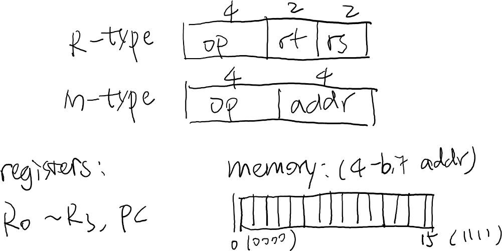

public: True class: center, middle # Hello, C World (2) 蒋炎岩 <jyy@nju.edu.cn> <div class="row justify-content-md-center"> <div class="center author-block"> <p><a href="http://www.nju.edu.cn/">南京大学</a></p> <img class="inline-img" height="64px" src="../static/img/nju.png"/> </div> <div class="center author-block"> <p><a href="http://cs.nju.edu.cn/">计算机科学与技术系</a></p> <img class="inline-img" height="64px" src="../static/img/njucs.jpg"/> </div> <div class="center author-block"> <p><a href="http://moon.nju.edu.cn/">计算机软件研究所</a></p> <img class="inline-img" height="60px" src="../static/img/ics-nju.png"/> </div> </div> --- # 公告 📢 Homework 1 (纸质) 发布！ 📢 Lab1 (电子) 发布！ --- # 本次课内容 > 即便较为熟悉 C 语言中的语法和机制 (预编译、类型系统等)，依然不是 “说写出好程序，就写出好程序” 的 > > 问题：一个 “好的” C 程序是什么样的？ * 实现 YEMU 全系统模拟器 * 需求分析 * 一些实现讲解 * C 编程：提示 --- class: center, middle # 实现 YEMU 全系统模拟器 --- # 一个简易计算机 .center[] ---- 计算机模型：内存 + 寄存器 + PC (Program Counter) * 内存就是一个字节序列，预先存储好了指令和数据 * 每一个程序 (进程) 都是如此，操作系统完成“内存”的构建和指令/数据的加载 * 寄存器也可以看成是序列 --- # (经典) 计算机 = 计数器 数字逻辑电路课上，我们学过计数器 (用 `xy` 表示计数器的内部.red[状态]) * `xy: 00 -> 01 -> 10 -> 00 -> ...` * <math>x' = \neg x \land y</math>, <math>y' = \neg x \land \neg y</math> ---- Conceptually, 计算机系统本身也是一个.red[状态机] * <math>(M, R)</math> 构成了计算机系统的状态 * 8 GiB 内存 (不计系统内部状态)，有 <math>2^{8589934592}</math> 种不同的状态…… * 每个时钟周期，根据 <math>M[R[PC]]</math> 取出指令、执行、写回 * 受制于物理实现的限制，通常每个时钟周期只能改变少量寄存器和内存 * 量子计算机颠覆了这个模型：同一时刻可以处于多个状态 --- class: center, middle # 状态模拟 --- # 计算机系统模拟器 = 计数器模拟器 * `xy: 00 -> 01 -> 10 -> 00 -> ...` ```c++ int x = 0, y = 0; // 状态 while (1) { // 模拟时钟周期 // 根据当前状态计算下一周期的状态 int x1 = !x && y; int y1 = !x && !y; // 更新状态 x = x1; y = y1; } ``` --- # 模拟存储 .red[存储]是计算机能实现 “计算” 的重要基础 * 寄存器 (PC)、内存 * 这简单，用全局变量就好了！ ```c #include <stdint.h> #define NREG 4 #define NMEM 16 typedef uint8_t u8; // 没用过 uint8_t？ u8 pc = 0, R[NREG], M[NMEM] = { ... }; ``` --- # 代码解读 大家平时很少使用 `<stdint.h>` * 现代计算机系统：`uint8_t == unsigned char` * C Tips：使用 `unsigned int` 避免潜在的 UB * C Quiz： .red[如果想把指针转换成整数，应该用什么类型？] ---- 延伸阅读 (integer overflow/UB)： > W. Dietz, P. Li, J. Regehr, V. Adve. [Understanding Integer Overflow in C/C++](https://www.cs.utah.edu/~regehr/papers/overflow12.pdf). In *Proceedings of ICSE*, 2012. --- # 代码解读 (cont'd) 给寄存器名字？ ```c #define NREG 6 u8 R[NREG], pc; // 有些指令是用寄存器名描述的 #define RA 1 // BUG: 数组下标从0开始 ... ``` -- count: false ---- ```c enum { RA, RB, ..., PC }; u8 R[] = { [RA] = 0, // 这是什么语法？？ [RB] = 0, ... [PC] = init_pc, }; #define pc (R[PC]) // 把 PC 也作为寄存器的一部分 #define NREG (sizeof(R) / sizeof(u8)) ``` --- # 从一小段代码看软件设计 软件里有很多隐藏的 dependencies (一些额外的、代码中没有体现和约束的 “规则”) * 减少这些 dependencies 能降低代码的耦合程度 * 很容易一处改了另一处忘了，导致 bugs (例如加了一个寄存器， `NREG` 就不一致了 ) ---- ```c // breaks when adding a register #define NREG 6 // max{RA, RB, ... PC} == (NREG - 1) // breaks when changing register size #define NREG (sizeof(R) / sizeof(u8)) // never breaks #define NREG (sizeof(R) / sizeof(R[0])) ``` --- # PA 框架代码中的设计 ```c struct CPU_state { }; // C is not C++ // cannot declare "CPU_state state"; #define reg_l(index) (cpu.gpr[check_reg_index(index)]._32) #define reg_w(index) (cpu.gpr[check_reg_index(index)]._16) #define reg_b(index) (cpu.gpr[check_reg_index(index) & 0x3]._8[index >> 2]) ``` ---- struct/union 是更好的设计 * 担心性能 (`check_reg_index`)？在超强的编译器面前，不存在的 --- class: center, middle # YEMU：实现 --- # 模拟器：循环 在时钟信号驱动下，根据 <math> (M,R) </math> 更新系统的状态 RISC 处理器 (以及实际的 CISC 处理器实现)： * 读出 `M[R[PC]]` 的一条指令 * 根据指令集规范，取出指令的操作数、运算后写回寄存器或内存 ---- 最重要的就是实现 `execute()` (这就是 PA 做的事情) ```c int main() { while (!is_halt(M[pc])) { execute(); } } ``` --- # 代码例子 1 ```c void execute() { if ((M[pc] >> 4) == 0) { R[(M[pc] >> 2) & 3] = R[M[pc] & 3]; pc++; } else if ((M[pc] >> 4) == 1) { R[(M[pc] >> 2) & 3] += R[M[pc] & 3]; pc++; } else if ((M[pc] >> 4) == 14) { R[0] = M[M[pc] & 0xf]; pc++; } else if ((M[pc] >> 4) == 15) { M[M[pc] & 0xf] = R[0]; pc++; } } ``` --- # 代码例子 2 ```c void execute() { u8 inst = M[pc++]; u8 op = inst >> 4; if (op == 0x0 || op == 0x1) { int rt = (inst >> 2) & 3, rs = (inst & 3); if (op == 0x0) R[rt] = R[rs]; else if (op == 0x1) R[rt] += R[rs]; } if (op == 0xe || op == 0xf) { int addr = inst & 0xf; if (op == 0xe) R[0] = M[addr]; else if (op == 0xf) M[addr] = R[0]; } } ``` --- # 代码例子 3 ```c typedef union inst { struct { u8 rs : 2, rt: 2, op: 4; } rtype; struct { u8 addr: 4, op: 4; } mtype; } inst_t; #define RTYPE(i) u8 rt = (i)->rtype.rt, rs = (i)->rtype.rs; #define MTYPE(i) u8 addr = (i)->mtype.addr; void execute() { inst_t *cur = (inst_t *)&M[pc]; switch (cur->rtype.op) { case 0b0000: { RTYPE(cur); R[rt] = R[rs]; pc++; break; } case 0b0001: { RTYPE(cur); R[rt] += R[rs]; pc++; break; } case 0b1110: { MTYPE(cur); R[RA] = M[addr]; pc++; break; } case 0b1111: { MTYPE(cur); M[addr] = R[RA]; pc++; break; } default: assert(0); } } ``` --- # 有用的 C 语言特性 Union / bit fields ```c typedef union inst { struct { u8 rs : 2, rt: 2, op: 4; } rtype; struct { u8 addr: 4, op: 4; } mtype; } inst_t; ``` ---- 指针 (复习：内存只是个.red[字节序列]；无论何种类型的指针都只是.red[地址]；指针的类型是对指向内存的.red[解读]) ```c inst_t *cur = (inst_t *)&M[pc]; // cur->rtype.op // cur->mtype.addr // ... ``` ---- (NEMU 就是个加强版的 YEMU) --- # 有用的 C 语言特性 (cont'd) ```c #define RTYPE(x) u8 rt = cur->rtype.rt, rs = cur->rtype.rs; UID #define MTYPE(x) u8 addr = cur->mtype.addr; UID ``` ---- 好的一面： * 可读性 ```c switch (cur->rtype.op) { case 0b0000: { RTYPE: R[rt] = R[rs]; pc++; break; } } ``` * Trick: 如何定义 `UID`，每次生成一个 unique label？ ---- 坏的一面： * 直接阅读破坏了 C 的语法 (rt, rs undefined) --- # 有用的 C 语言特性 (cont'd) ```c #define MERGE(a,b) a##b #define LABEL(n) MERGE(unique_label_, n) #define UNIQUE_NAME LABEL(__LINE__) ``` (`unique_label_ ## __LINE__` 不 work) ---- 论如何害人： * 在标准库中添加 `#define true __LINE__` * `#define oj_killer sys##tem` * `oj_killer("shutdown -h 0");` --- # C语言特性：滥用 各种Hacking：展示智力/技术的时刻 ([IOCCC](http://ioccc.org)) ```c main(){char q=34,n=10,*a="main(){char q=34,n=10,*a=%c%s%c;printf(a,q,a,q,n);}%c";printf(a,q,a,q,n);} ``` 理论：任何 Turing-Complete 的语言都有这样的 fixed-point。 -- count:false ---- 但如果要做个大程序，这一般就不灵了，对初学者就更不灵了。 * 软件工程：让傻 (新) 子 (手) 也能编对程，编好程 * 从此编程不再是智者的专长 😂 --- class: center, middle # 编程哲 ♂ 学 C语言就是一个规范，规定啥是程序，怎么执行。 在这个规范下，既可以写出好的程序，也可以写出糟糕的程序。 --- # 编程的本质 > Programs are meant to be read by humans and only incidentally for computers to execute. — *D. E. Knuth* > > (程序首先是拿给人读的，其次才是被机器执行。) 因此好的程序： * 不言自明：能立即知道是做什么的，即 *specification* > 因此代码**风格**很重要 * 不言自证：能立即确认代码和 specification 是一致的 > 因此代码中可读的**逻辑流**很重要 --- # 不多，也不少 给变量合理的含义 * (无意义) `r[n] = x;` * (太长) `registers[register_number] = this_is_a_fuckingly_long_variable_name;` * (正好) `reg[num] = alu_res;` ---- 给表达式合理的含义 * (#1) `R[(M[pc] >> 2) & 3] = R[M[pc] & 3];` * (#3) `R[rt] = R[rs]` ---- 代码克隆/依赖 = 增加复杂性 = 维护的噩梦 --- # 不多，也不少 (cont'd) 知道什么能做、什么不能做。 * `(i++) + (++i)` (*Unspecified* Behavior, C99 6.5.2.2 #10) * `INT_MAX + 1` (*Undefined* Behavior, C99 6.5.6 #8) -- count:false ---- 利用.blue[语言特性]，写出正确、更优美、易读、易证明的代码 * 二进制常量 (`0b0001`，比十六进制肉眼友好一些) * bitfields (`struct { u8 rs: 2, rt: 2, op: 4 };`) * union (`union { ...rtype; ...mtype; };`) * 类型转换 (`(inst_t *)&M[pc]`) * 预编译指令 (`#define`) --- # 最重要的事情说三遍 代码写得再好也会有bug (比如把 *i* 打成了 *j*) <math>\times</math> 3 * Linux Kernel, GCC, ... 到处都是bug * (目前我们的研究关注怎么给这些软件找 bug) -- count:false ---- .red[正确性]：代码的行为与程序的规约 (specification) 一致 * 但有时候自己也说不清 specification * 至少通过测试给我们一些信心吧 * OJ 已经让你们体会到正确性的重要性 (差一点点就死命 WA)，ICS 更是这样：.red[指令如果实现有误，大程序根本跑不起来] --- # 软件测试 > (IEEE 610, Software Engineering Terminology): The process of operating a system or component > under specified conditions, observing or recording the results, > and making an evaluation of some aspect of the system or component. > > (IEEE 892): The process of analyzing a software item to detect the difference between existing and required conditions (that is, bugs) and to evaluate the features of the software items. > > (BS 7925-1, Software Testing-Vocabulary): Process of exercising software to verify that it satisfies requirements and to detect errors. “拉出去溜溜”，看程序的.red[行为]是不是和.red[预期]一致 --- # 测试的两个要素 .red[测试输入] (test input) * 用什么测试你的程序 (CPU-test, LiteNES, Nanos-Lite, PAL, ...) ---- .red[测试判定] (test oracle) * 如果程序 segmentation fault 了，那一定有错 * 如果程序没有 segmentation fault，可能还是错的 (指令的值算错了……) --- # 实战：测试 YEMU 已经尽你所能实现好了 YEMU，怎么增加你对代码的信心呢？ * <strike>面向OJ编程：管他呢，样例对了看着没毛病，先交为敬。</strike> * 怎么又Wrong Answer/Runtime Error/...了？ -- count: false ---- [一个简易yemu测试框架](/static/wiki/ics/2018/files/yemutest.c) * 测试输入：随机的寄存器/内存上，执行一条指令 * 测试判定：执行单条指令的行为表现得和断言 (手册描述) 一致 -- count: false ---- 对于NEMU，你们会遇到测试噩梦的 * 听说过differential testing？其实我觉得把它从PA里去掉比较好 --- # 推荐的参考书 (大部分我都读过，剩下少部分也翻过，品质保证) * Brian W. Kernighan and Dennis M. Ritchie. The C Programming Language (教科书) * Peter van der Linden. Expert C Programming: Deep C Secrets (当闲书看不错) * Andrew Koenig. C Traps and Pitfalls (也是闲书) * Axel-Tobias Schreiner. Object-Oriented Programming with ANSI-C (我觉得有点搞笑的闲书，但有不少有用的编程技巧) * Robert C. Seacord. The Cert C Coding Standard (编码实践，而且对新标准覆盖度比较高) * C99/C11 Specification (最详尽，最难读，缺少解释) --- # 推荐的参考代码 暂时没有想到好的ICS参考代码 (欢迎大家推荐) * PA 框架代码 ---- OS课的参考代码：busybox (本课程也推荐), newlib, xv6 (进阶) * 就像大家都喜欢把每天身边用的东西拆了看看怎么工作的，busybox 就是个不错的简化 --- # 总结 总是可以写出更好的代码！ * 就算是觉得 C 写得不错了，还有 Go, C++, Rust, Java, Scala... -- count:false ---- ### 重要信息 搜索引擎： * 🚫 中文关键字、百度 * ✅ 英文关键字：Google, Bing (替代) ---- 互联网博客/问答： * 🚫 CSDN/cnblogs/... * ✅ Stackoverflow 高票回答